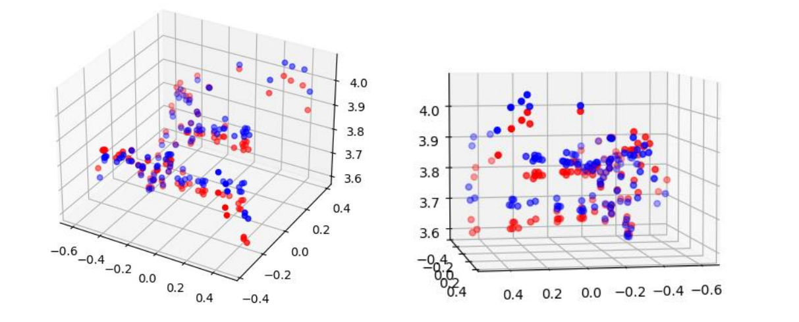
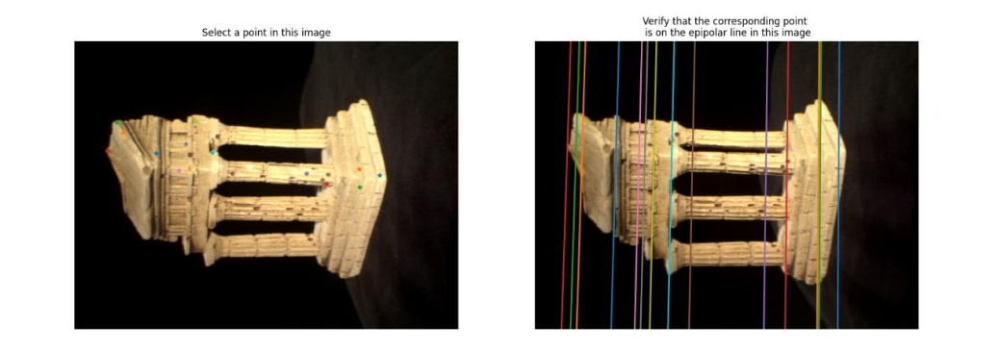
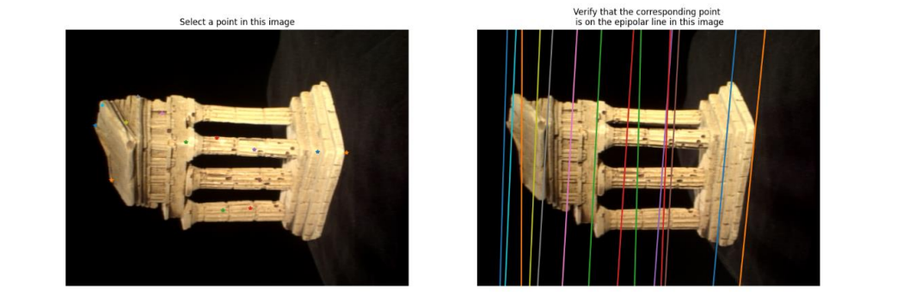
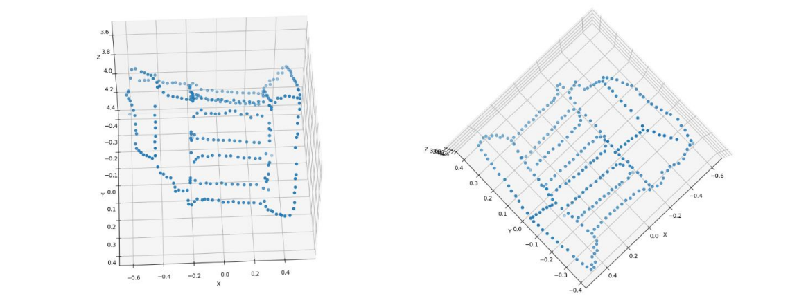
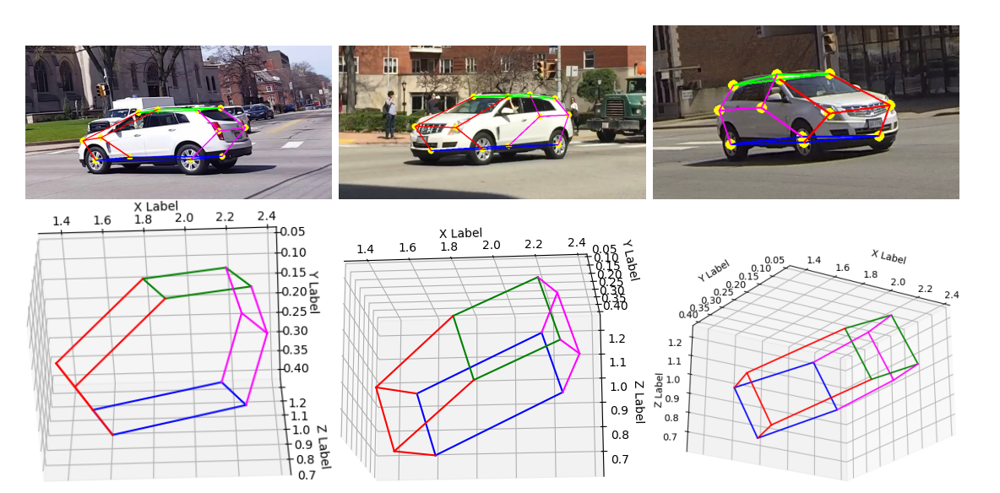

3D Reconstruction
16-720 Computer Vision: Homework 4 · Fall 2022

About The Project
Implemented an algorithm to reconstruct a 3D point cloud from a pair of images taken at different angles. Used the 8-point/7-point algorithm and triangulation to find and visualize 3D locations of corresponding image points.
Built With
- Python
- NumPy
Results
For the entire report, please refer to the Documentation
- The Eight Point Algorithm for calculating the fundamental matrix 
- The Seven Point Algorithm for calculating the fundamental matrix 
- 3D Visualization of point cloud 
- Bundle Adjustment using RANSAC
- Multi View Keypoint Reconstruction 